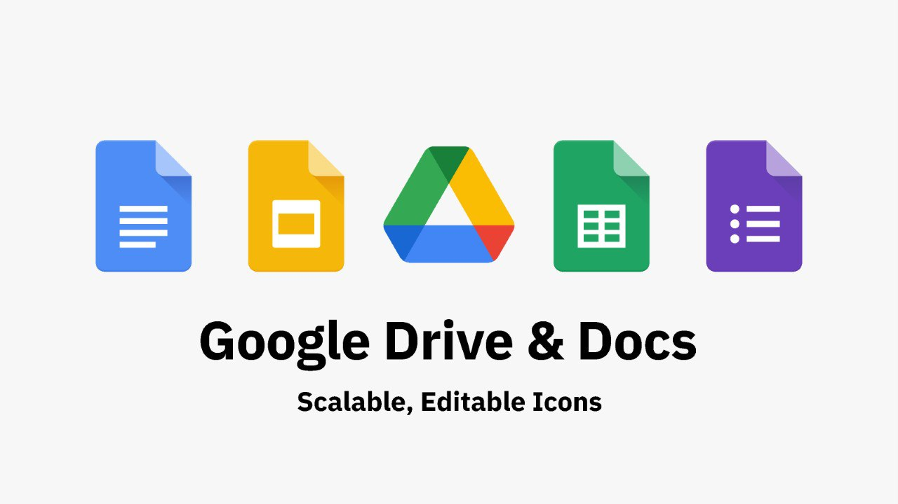

| Feature | Importance in ICT |
|---|---|
| Accessibility | Most services are free or low-cost, Briding the "Digital Divide." |
| Interconnectivity | All Google services are linked via one account, creating a seamless "Ecosystem." |
| Big Data | Google's ability to process massive amounts of data helps in research, marketing, and science. |
| Education | Google for Education (Classroom) has become the standard for digital learning worldwide |
Google Workspace is an integrated suite of cloud-based productivity and collaboration tools developed by Google. It serves as a centralized digital ecosystem designed to streamline workflows, enhance communication, and foster real-time collaboration within teams and organizations.
The core elements of Google Workspace include:
